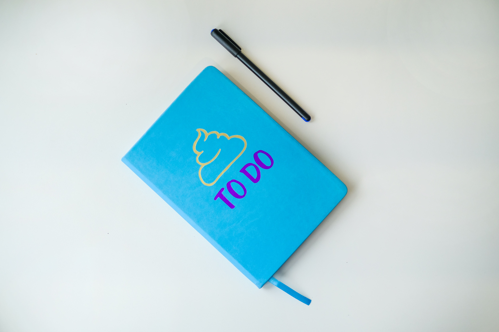

Questions fréquentes sur la TodoList
1. Qu'est-ce qu'une TodoList ?
Une TodoList est une liste de tâches à accomplir, souvent utilisée pour organiser et prioriser les activités quotidiennes, professionnelles ou personnelles.
2. Pourquoi utiliser une TodoList ?
Utiliser une TodoList permet de gérer efficacement son temps, d'améliorer la productivité, de réduire le stress et de ne pas oublier les tâches importantes.
3. Comment créer une TodoList ?
Pour créer une TodoList, vous pouvez utiliser une application ou un outil de gestion de tâches comme Todoist, Trello, ou même simplement un papier et un crayon. Il suffit de noter les tâches à accomplir et de les organiser selon vos préférences.
4. Comment organiser les tâches dans une TodoList ?
Il existe différentes méthodes pour organiser les tâches dans une TodoList. Vous pouvez les classer par priorité (haute, moyenne, basse), par échéance, par catégorie ou en utilisant des étiquettes. Trouvez la méthode qui convient le mieux à votre style de travail.
5. Comment ajouter une tâche à une TodoList existante ?
Pour ajouter une tâche à une TodoList existante, il suffit de la saisir dans la liste en respectant l'ordre déjà établi ou en déterminant une nouvelle position pour la tâche en fonction de sa priorité ou de sa date d'échéance.
6. Comment marquer une tâche comme terminée dans une TodoList ?
Pour marquer une tâche comme terminée dans une TodoList, vous pouvez utiliser une case à cocher à côté de chaque tâche et la cocher lorsque la tâche est accomplie. Certains outils de gestion de tâches proposent également des fonctionnalités spécifiques pour marquer les tâches terminées.
7. Comment supprimer une tâche d'une TodoList ?
Pour supprimer une tâche d'une TodoList, vous pouvez la sélectionner et la supprimer manuellement de la liste. Assurez-vous de ne supprimer que les tâches que vous avez terminées ou que vous ne souhaitez plus conserver dans la liste.
8. Comment réorganiser l'ordre des tâches dans une TodoList ?
Pour réorganiser l'ordre des tâches dans une TodoList, vous pouvez généralement faire glisser et déposer les tâches dans l'ordre souhaité. Cette fonctionnalité est souvent disponible dans les applications ou les outils de gestion de tâches.

9. Comment définir des priorités pour les tâches dans une TodoList ?
Il existe différentes méthodes pour définir des priorités pour les tâches dans une TodoList. Vous pouvez utiliser des codes de couleur, des étiquettes de priorité (ex : haute, moyenne, basse) ou attribuer des niveaux de priorité numériques (ex : 1, 2, 3). L'objectif est de distinguer les tâches urgentes ou importantes des tâches moins prioritaires.
10. Comment planifier les échéances des tâches dans une TodoList ?
Pour planifier les échéances des tâches dans une TodoList, vous pouvez attribuer des dates ou des délais spécifiques à chaque tâche. Cela vous permet de visualiser les tâches à accomplir dans un calendrier et de vous assurer de respecter les échéances.
11. Comment suivre les progrès des tâches dans une TodoList ?
Vous pouvez suivre les progrès des tâches dans une TodoList en utilisant des indicateurs visuels tels que des barres de progression, des pourcentages d'achèvement ou des états (en cours, en attente, terminé). Cela vous aide à voir facilement quelles tâches sont en cours et combien ont été accomplies.
12. Comment partager une TodoList avec d'autres personnes ?
Pour partager une TodoList avec d'autres personnes, vous pouvez utiliser des fonctionnalités de partage disponibles dans certaines applications ou outils de gestion de tâches. Cela permet une collaboration et une répartition des tâches plus efficaces au sein d'une équipe ou d'un groupe de travail.